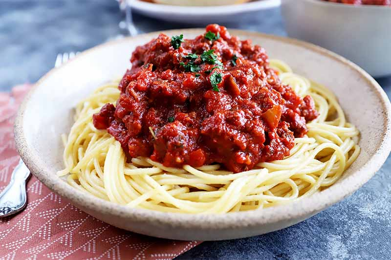
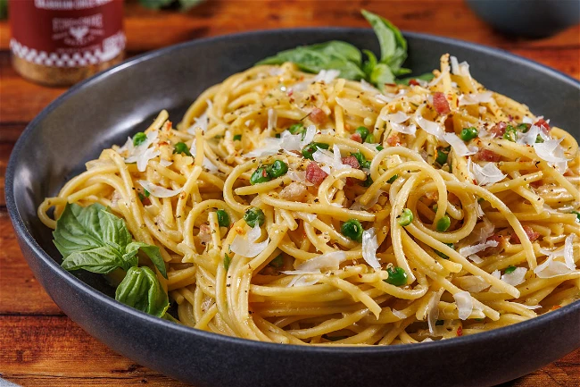

Spaghetti Bolognese

Spaghetti Bolognese is a classic Italian dish that combines spaghetti pasta with a rich and flavorful meat sauce. The sauce is typically made with ground beef, onions, garlic, tomatoes, and a blend of herbs and spices. It's a hearty and satisfying meal that is loved by many. Cooking is just as fun as eating it! Lets get right into it!
Ingredients:
- Spaghetti pasta
- Olive oil
- Bacon
- Onions
- Stalk celery
- Carrots
- Oregano
- Garlic
- Ground Beef
- Garlic
- Tomato paste
- Vinegar
- Basil, salt ground black pepper
- Parmesan cheese
Instructions:
- Fill a large pot with lightly salted water and bring to a rolling boil. Stir in spaghetti and return to a boil. Cook spaghetti uncovered, stirring occasionally, until tender yet firm to the bite, about 12 minutes; drain.
- Heat olive oil in a large pot over medium heat; add bacon. Cook, turning occasionally, until crisp, 8 to 10 minutes. Add onion, celery, carrot, and oregano to bacon; continue cooking until vegetables begin to soften, 8 to 10 minutes. Add garlic; cook until fragrant, about 2 minutes. Crumble in ground beef; cook and stir until no longer pink and completely cooked, 8 to 10 minutes.
- Pour vinegar over ground beef mixture; simmer until liquid evaporates, about 5 minutes. Stir in crushed tomatoes, tomato paste, and sugar; bring to a boil, season with salt and black pepper, then remove from heat. Stir in basil .
- Spoon sauce over spaghetti; top with Parmesan cheese to serve.
See more about the original recipe here
Lasagna

A hearty, layered, and baked masterpiece. Wide sheets of flat pasta are alternated with rich layers of meat sauce, melted mozzarella, creamy ricotta, and grated Parmesan, then baked in the oven until bubbly and golden.
Ingredients:
- Beef
- Cheese
- Eggs
- Seasonings
- Water
- Lasagna noodles
Instructions:
- Gather all ingredients and preheat the oven to 350 degrees F (175 degrees C).
- Heat a large skillet over medium-high heat. Cook and stir ground beef in the hot skillet until browned and crumbly, 8 to 10 minutes. Drain and discard grease. Stir in spaghetti sauce and simmer for 5 minutes.
- Combine cottage cheese, 2 cups of mozzarella cheese, eggs, 1/2 of the grated Parmesan cheese, dried parsley, salt, and pepper in a large bowl.
- Spread 3/4 cup of sauce in a 9x13-inch baking dish. Cover with 3 uncooked lasagna noodles, 1 3/4 cups of cheese mixture, and 1/4 cup sauce; repeat layers once more. Top with remaining 3 noodles, sauce, mozzarella, and Parmesan cheese. Pour 1/2 cup water along the edges of the dish. Cover tightly with aluminum foil.
- Bake in the preheated oven for 45 minutes. Uncover and bake for an additional 10 minutes. Let stand 10 minutes before serving.
- Serve and enjoy!
See more about the original recipe here
Spaghetti Carbonara

A staple of Roman cuisine made with just a handful of ingredients. It tosses al dente pasta (often spaghetti or bucatini) with crispy cured pork (guanciale or pancetta), eggs, pecorino romano cheese, and cracked black pepper to create a glossy, creamy sauce without heavy cream.
Ingredients:
- Spaghetti
- Olive oil
- Bacons
- Onions
- Garlic
- White wine
- Eggs
- Parmesan cheese
- Salt and pepper
- Parsley
Instructions:
- Bring a large pot of lightly salted water to a boil. Cook spaghetti in boiling water, stirring occasionally, until tender yet firm to the bite, about 12 minutes. Drain, toss spaghetti with 1 tablespoon olive oil, and set aside.
- Place diced bacon in a large skillet over medium heat; cook and stir until evenly browned, about 10 minutes. Drain bacon on paper towels, reserving 2 tablespoons bacon fat in the skillet.
- Add 1 tablespoon olive oil to bacon fat in the skillet. Add chopped onion and cook over medium heat until onion is translucent. Add minced garlic and cook until fragrant, about 1 minute. Add wine and cook 1 minute more.
- Return cooked bacon to the skillet; add cooked spaghetti. Toss to coat and heat through, adding more olive oil if it seems dry or sticks together. Add beaten eggs and cook, tossing constantly with tongs or a large fork, until eggs are barely set. Quickly add 1/2 cup Parmesan cheese and toss again. Season with salt and pepper (remember that bacon and Parmesan are very salty).
- Serve warm with chopped parsley sprinkled on top and extra Parmesan cheese at the table.
- Serve and enjoy!
See more about the original recipe here